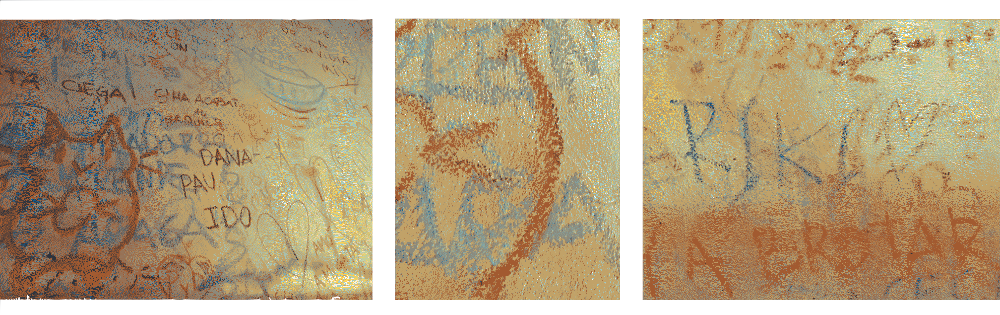
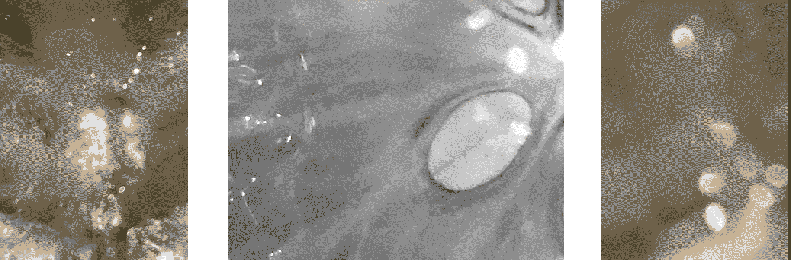
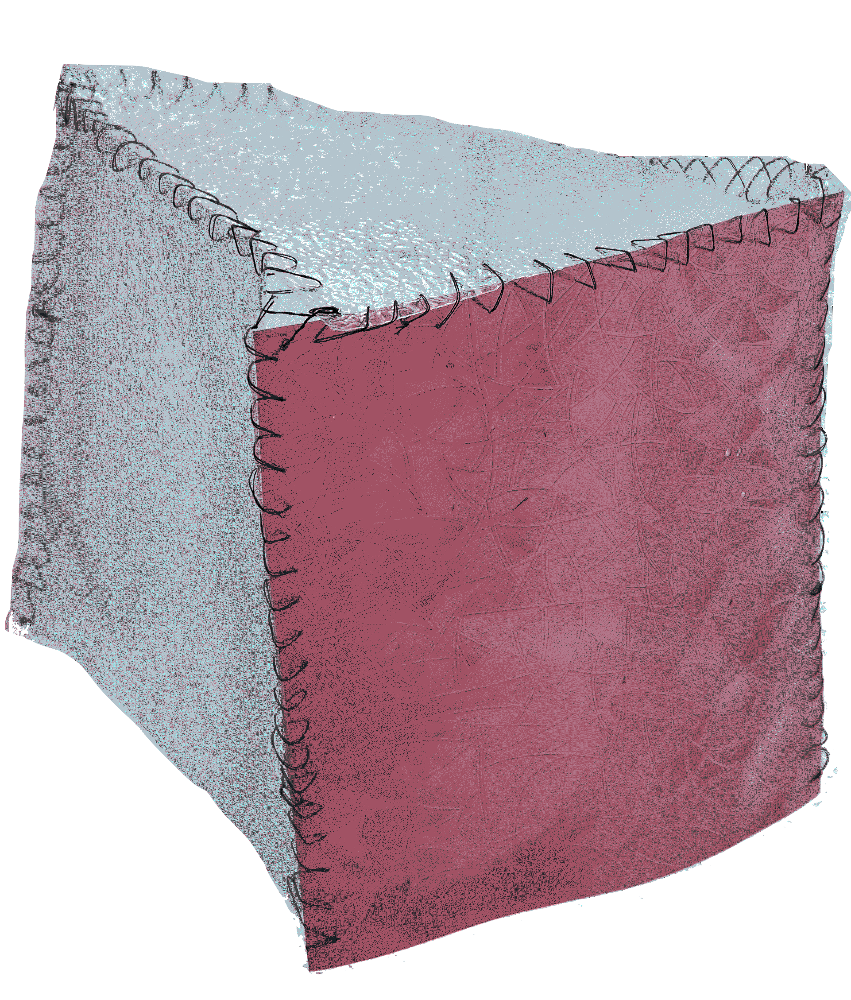

¶
üóì Week 13&14 / 18 January - 3 February 2023
remixing materials¶
with Lara Campos and Laura Freixas and Petra and Edu
this week we have been introduced to a new pair of glasses to look at (bio-based) materials. approaching microorganisms, rubbish, and things our neighborhood doesn’t “need” through an exploration-based sensory experience showed me what experimenting with (potential) bio-based materials means. we grow our own biological base and manipulate the process and outcomes in different ways (sometimes with more control than other times).
the aim is to develop a prototype for a material that can be used on a larger scale and potentially (re)take current uses. we engage in systemic design processes that include the use of local and to- hand material sources and help connect them to the socio-economic context rather than using sophisticated laboratories.
material exploration¶

around me I see wax on walls
EMOTIONAL LOADING. the sight of this wall with messages reminds me of so many things: a hike in the mountains, a small hut and writing names and dates on the wooden plank. since we haven’t thought of the need for pen or paper, the only thing left burning is a candle, whose melted wax we can carefully spread on the wood and press our fingers into. before we leave the next morning and roll up our sleeping bags, we promise that we will return to this place. in 10 years, we will meet here again, and will update our fingerprints […] we climb the many stairs to the highest tower in town. its stone walls enclose our small group, breathing heavily. at the top, the wind cools us down quickly, but we can’t just climb back down yet. we want to make sure we leave a trail. with a wax crayon we paste our symbol on the stone in the upper left corner. who knows who will discover it one day.
wax crayons are one of the most amazing tools to put color and words on all kinds of surfaces, one can use fingers and body heat (e.g. friction between fingers) to easily (re)define its properties. On multiple scales, fictional, technical, and emotional, wax is one of the most variable and adaptable materials I can think of.
LOOK. crayons are pigmented wax used for writing or drawing. wax crayons are not pastels (in pigments mixed with dry binders, e.g. gum arabic) neither oils (pigments mixed with a liquid binder e.g. mixture of wax and oil). usually wax crayons are approximately 89 mm long and made mostly of dyed paraffin wax.
STORY. wax is a binding material for pigments – and thus the leaving of traces, messages, signatures – goes back thousands of years. Egyptians, Romans, Greeks, and indigenous people in the Philippines use encaustic painting a technique in which hot beeswax is combines with pigments to bind colors onto stone. the heat applied to the “drawing” burned the image onto the stone and it is being kept in place for centuries.
POSSIBLE APPLICATIONS. I have described how different forms of pigmented wax are used and can be used to leave traces, send messages, or create space for creativity to flourish. speculating about the materials of our time, the temperature-varying properties of wax can be of use when thinking about integrating wax into more complex technologies, such as measuring times or pressures, climates or fractures that take place in the environment.
referenced I dream of living without skin
EMOTIONAL LOADING. skins take care of us, skin show us signs of alarms when our brains decide to ignore our inside-conditions. skins come in various forms. what if we lived without our own? or with our skin not covering us but protecting it inside of us?
a Scobie to a Kombucha is like the skin-organ to humans. if Kombucha has a body, it’s the liquid sheltering its skin. similarly how in humans, the skins hold the liquids together, for Kombuchas, their liquids hold their Scobies intact. and we know by the skin, whether the body is healthy or not.
LOOK. the Kombucha-Scobie looks like a thick skin that is being wettened and polished. technically it is a symbiotic culture of bacteria and yeast. kombucha is the liquid in which the Scobie vegetates in. it is (mostly black or green) tea that with the help of the Scobie ferments and one drinks it after some time. Cold, as a beverage – because of its health-benefits, its alternative-quality to alcohol (the fermentation process is stopped so early, that there is no crucial amount of alcohol in kombucha), and some even enjoy the taste (that is pretty much fermentation).
STORY. from an ancient healing practice to a pricy “Kaltgetränk” (a german word describing fresh beverages that have sparkle. Germans have something with sparkles, and you can get almost every juice as a “Schorle” – mixed with sparkling water) or a demanding pet.
long before our start of counting the time, in Northeast China/ in Manchuria people used fermenting teas for their healing processes. a Korean physician brought it once to Japan to aid curing the Emperor Inkyo. His name was Dr. Kombu and promptly, the ancient methods gained a new name. in Russia and Germany the fermenting tea soon gained popularity (in Germany as “Kombuschaschwamm” which is not a very accurate description as the Scobie really has nothing spongelike to it), but due to a lack of tea and sugar supplies (sugar is the second and essential ingredient to care for kombuchas) it reclined again. While for Chinese healers fermenting tea never lost its significance, for domestic markets in the West it took a popular book and some accidental experiences with AIDS and cancer to convince consumers to buy drinks that boost their immune systems, or even to get a Scobie to homebrew their panaceas (an English word for cure-all).
POSSIBLE APPLICATIONS. we learned how Kombucha can dehydrated, polished, stamped, deformed and (re)formed. its textures remind of leather and can be resistant if not too liquids.

I imagine materials to hold
EMOTIONAL LOADING. soaking me in a warm embrace. I don’t know where you part from me.
LOOK. white (because white bears all possible colours in her) soft yet structured, sprinkled with ruptures.
STORY. historically there were mountain-climbers that used it to hold onto, to keep track of the road and to navigate through darkness. its multifunctionality made it very popular especially in between those that had difficulties using feet, toes and fingers when very cold.
POSSIBLE APPLICATIONS. once can carry the raw material with it, it is being formed by body liquids such as spit and blood. once in touch with spit for example, the white will be luminous. when in contact with blood, it will indicate the north. if one is sweating, the material will be maluable only at part in touch with human skin, on rocks, trees and other biological surfaces it will stick very strongly so the climber can confidently trusts its grip.
3D printing with ceramics and biomaterials¶
with Petra and Edu
the first 3D printer was invented years ago, by a Japanese engineer that was never accredited for his practice;
“1981 - the first patent for a device using UV light to cure photopolymers was awarded to Hideo Kodama in Japan. He designed it for ‘rapid prototyping’ as it was intended for making models and prototypes, but there was no interest and the patent was abandoned“
1983 was a first mentioning of a 3D prrinter; by a Chick Hall that engineered a Stereolithography Apparatus (SLA)-1 machine. But similarly as the first computers, this machine was big chunky, unhandy, slow, and overall not efficient.
then in 2005 two guys (RepRap ) invented a machine that can make parts for new machines, open to the public; their project exploded and tons of users together improved the machines with every iteration.
the idea: open-source machine with which everyone could make parts to build new machines.
today we are at an iterations of the 30th 3D printers family. it is important to acknowledge, that we are relying on patent disclosures – if the functions, the technologies of a 3D-printer is hidden/ in a box, this type is patented, you have to pay it in order to use it.
OPEN SOURCE is essential – the beauty and also what brought us to the advancement-stage on where we are, is only possible through multiple application of multiple people with multiple purposes
over all there are three forms of (3D printing techniques):
subtractive manufacturing: such as milling and turning, creates objects by removing (machining) material from a block of solid material that’s also often referred to as a ‘blank’.
and
additive manufacturing: builds up 3D objects by depositing and fusing 2D layers of material. Useful for rapid prototyping
and
formative manufacturing: such as injection molding and stamping, creates objects by forming or molding materials into shape with heat and/or pressure.
there are more than 300 different kinds of applying various materials with 3D printing techniques.
well, lets get into it…
clay experimenting¶
we mixed:
2 kilos clay + 200 ml of water (10% of the amount of clay is a good amount)
then we forced it into a “pump” and installed the 3D printer (fully self-made by the lovely fablab people). with UltiMaker Cura we translated a very simple rhino-shape into a readable format and with a sd-card (no bluetooth or airdrop yet…) to the printer-computer. and then we waited, everyone was very excited to watch the little slimy clay snake drawing its circles.

and by the way, this end result was the second trial. our first one did fell during the printing process… buuuuuut however. death is part of life one could say. well and what to say more about these two weeks of experimentation?
abjecting the known¶
with Korbi and Myrto and Marielle and the help of the cats Arthur, Bethy and Joyce
this whole experiments with biomaterials were a bit difficult to me. we are trying to replace plastics from petroleum, as this is a finite resource which’ extraction from earth is cause to fatal pollutions and disbalances of whole ecosystems, with more regenerative, circular materials that could serve the same purpose. yet often, plant-based materials that used in bio-plastic-experimentation such as alginates or tree-resins, are not locally accessible in the urban environment I find myself in. ingredients for experimentation are ordered from far, mixed together by us in inseparable ways and poured into forms and moulds just to look and test for a few days. however, I really acknowledge the importance of experimentation with hands to experience “with my body”…even if the prior incentive of promoting the circularity of life and the regenerative aspects of resources fails in the lab-context. yet still I have to say, it is not my cup of tea.
but I tried my best to curiously play around and as a group we tried to adress this topic and include some awareness raising into the process of what materials we use for the making of what materials. we tried exploring a set of locally (bodily?) materials that may be under-researched because the process is often seen as ‘disgusting’, not because they are not suitable materials, but because of the growth and feeding of social boundaries (between accepted and unaccepted) that were culturally constructed and serve to maintain social order and power dynamics.
we worked with the abject-theory as foundation on exploring how hair and gelatine (often considered the dead and disgusting parts of human and animal life) can be introduced into the bio-plastic-experimentation-world and what questions this would bring, what boundaries it could dissolve. the use of abjects in art often comments on cultural attitudes towards the body and its waste. similarly, we aim to push the limits of what is deemed appropriate for commercial and industrial use. by creating hair-gelatine materials (that look really not appealing) we aim to provoke a response that goes beyond traditional aesthetic enjoyment that often comes with the smooth and colourful appearance of bio-plastic-leather, algae-based paints or chia-based skincare products.
here is our little presentation on abjecting the known :))
furthermore I am interested in creating sun-light-playing cubes, sculptural pieces that trigger discourse about air and solids, about places and made-up boundaries.
the flexible gelatine material allowed me (after various trials to find out the right composition of gelatine and glycerin) to sew pieces together and create a small version of a cube.
